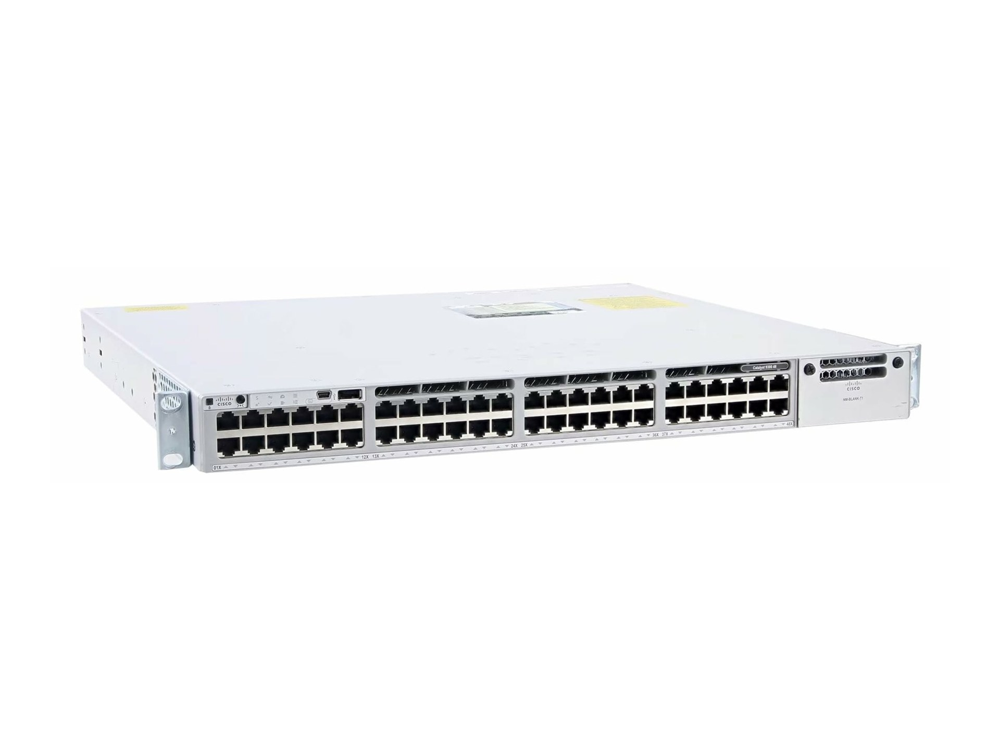

این وبلاگ را ساختم تا لازم نباشد برای هر مدل ۱۰ سایت را بگردی. هر کارت = یک مدل واقعی بازار ایران: عکس واقعی، قیمت حدودی به دلار (بدون نوسان تومان)، پورتها، سرعت، PoE، کاربرد و اینکه برای خانه است یا دیتاسنتر.

۲۴ پورت گیگ PoE + چهار آپلینک ۱۰ گیگ؛ محبوبترین سوییچ نیمهصنعتی ایران.
≈ ۴۸۹ دلارخیلیها این سه را قاطی میکنند. ساده بگویم: سوییچ دستگاههای داخل یک شبکه را به هم وصل میکند (مثل چند کامپیوتر و دوربین به یک سوییچ). روتر شبکه تو را به اینترنت یا شبکه دیگر وصل میکند و مسیر میدهد. مودمروتر (مثل یوتل و نتربیت) مودم خط تلفن/سیمکارت + روتر وایفای خانگی است؛ برای دیتاسنتر به درد نمیخورد.
برای انتخاب سریع، ارزانترینها بالا و دیتاسنتریها پایین جدولاند.
| مدل | ساخت | نوع | پورت شاخص | قیمت ≈ $ |
|---|
ژرف پویان توس (مشهد): سوییچهای لایه ۲ و ۳ با ۲۴ و ۴۸ پورت؛ رقیب ایرانی سیسکو 2960/9200. تتا (تحقیق و توسعه ارتباط): سوییچهای دیتاسنتری White-Box با چیپ برادکام و سیستمعامل بومی؛ الان در Core مخابرات ایران ترافیک واقعی عبور میدهد. نتربیت (آونگ): مودمروترهای 4G و VDSL از ۱۳۹۸. یوتل (ارگ جدید / بم): اولین مودمروتر بومی از ۱۳۹۵. عکس مدلهای ایرانی نمایشی از همان رده است چون پرسکیفیت رسمی محدود منتشر شده.